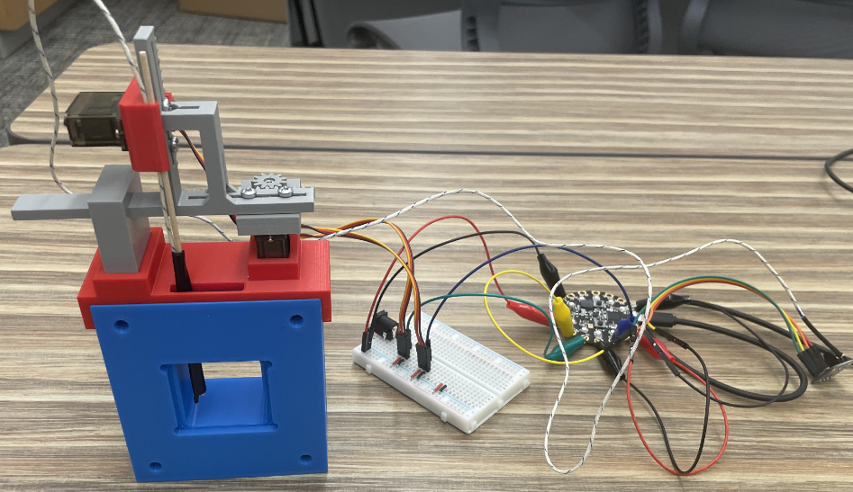
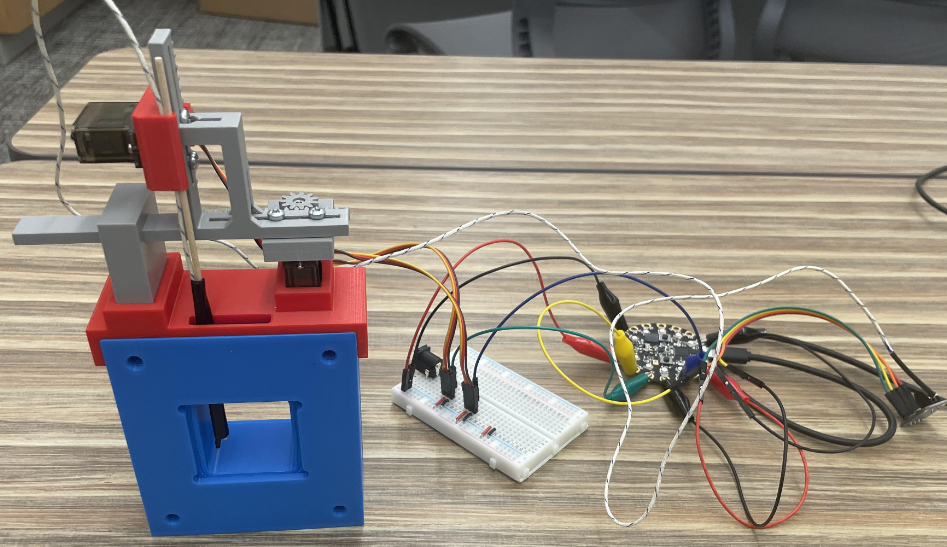

Current Work
- Draper Electro-Mechanical & Instruments Intern
Previous Work
-
Most Relevant Experiences
- RESEARCH - Low Temperature Battery Chamber, Two Axis Temperature Data Logger, & Battery Materials Research - May 2024 to Current
- 2-axis temperature logging device that produces a 3D temperature plot in order to remotely record temperature gradients.
- Custom wire connectors
- A video setup using a drone camera that allowed us to see inside the refridgerator.
- Manual & CNC Mill
- CAD, CAM, & 3D Printer
- Electronic Tools and Components
- Delrin
- Thermoelectric Modules
- Miniature Drone Camera
- PLA
- Much More
- Professor Hillary Smith & the rest of the Smith Materials Lab Team
- Steve Palmer, Paul Jacobs, & J. Johnson
- Brad Johnston
- INTERN - Product Development Engineer Intern at Pression - May 2023 to Aug 2023
- Arduino, MPLab IDE, Github, 4DGL (a C-like language)
- Hand Tools
- Power Supply, Microcontrollers, other Electronics
- I primarily worked with Dzineon Gyaltsen '24, but also worked with many other members of the team including CEO Adam Salamon and Research Engineer Pablo Huang.
- Swarthmore Labs
- *****Comma, a Startup - Feb 2023 to Sep 2023
- Anhad Singh '26
- Nana Asante '26
- RESEARCH - Flow-Induced Vibrational Energy Harvesting - Jan 2024 to May 2024
- CAD & 3D Printer
- Band Saw
- Drills and Taps
- Belt Sander
- PLA
- Aluminum
- Copper Tubing
- Epoxy
- "Aerodynamic" Tape
- Professor Emad Masroor
- J. Johnson, Swarthmore Engineering Machinist
- Vansh Garg '26
- Dylan Jacobs '27

 


Led the design, creation, and testing of an airtight cooling chamber for 3 month long battery experiments for $300 of new components. Commercial alternatives exceed $5000. The design was effective and a second module was requested. Authoring a methods paper that details the design so other research labs can replicate it.
Designed and built many other adjacent concepts including:
Presented design and research on 5 occasions including at the Material Research Society's Conference in Boston.
I also worked with the rest of the team to run various other experiments (Mossbauer Spectroscopy, Electrical Impedance Spectroscopy, etc...).
(and I got to help with the new Radio Telescope)
Main Tools & Machines Used
Materials Used
Worked With

Pression, a biomedical early stage company, was a great place to work (learn more about Pression here). My main tasks revolved around the Wave PRO's embedded systems and software. Dzineon Gyaltsen '24 and I wrote the majority of the code for the main display and its interactions with the microcontrollers and the rest of the system. Our work is in use in clinical trials. I also completed many different tasks at Pression including designing a few peripheral components, authoring quality management documents, supporting the CEO with the pitch deck, and assembling some prototypes. Adam Salamon and the rest of the team created a great environment to get work done and have fun while doing it. Adam was also supportive of Comma, my startup at the time, and I learned a lot about startups and business at Pression. There are limited pictures due to a NDA.
Tools, Software, & Machines Used
Worked With


Comma was a project which started with myself, Anhad Singh, and Nana Asante. We wanted to create the Spotify for books. We received 2nd place at SwatTank 2023 (a startup pitch competition), established partnerships with 8 libraries, built a website, strategized with the holders of the second largest digital collection in the USA, the Hathi Trust, and created many other startup materials including a shared Notion, outreach trackers, customized marketing materials for different audiences, library agreement documents, mailing lists, a GitHub repository, time trackers to divide initial equity using the Slicing Pie method (learn more at slicingpie.com), and much more. We also developed a UI (click fit to scale in top right for best experience) that can be clicked through to get an initial feel for how our software would have worked. We stopped working on Comma due to potential legal challenges not dissimilar to Spotify's that we felt we were ill-positioned to take on.
Worked With


Professor Masroor's research in flow-induced vibrations explores the potential to harvest energy from vibrations that are induced by vortices shed from a body in fluid flow. I primarily worked on building the first iteration of an apparatus that could allow us to explore different bodies in Swarthmore's wind tunnel. I also designed more than 10 bodies for us to test and discussed how we might convert the vibrations to electrical energy. More information about what I did is provided here.
Tools & Machines Used
Materials Used
Worked With